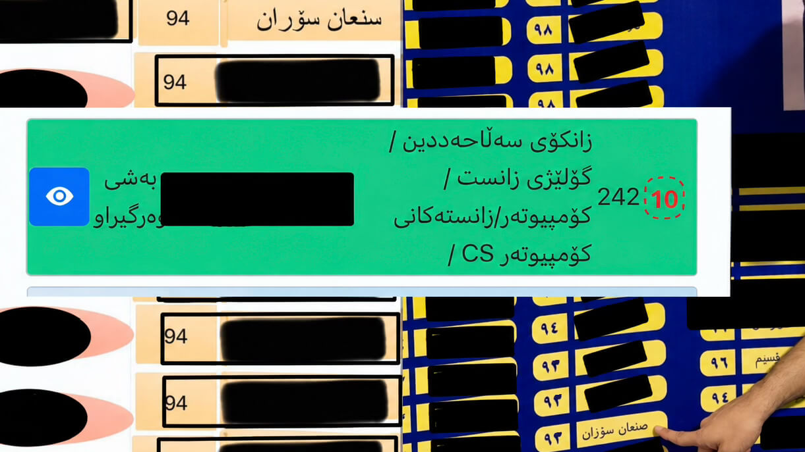
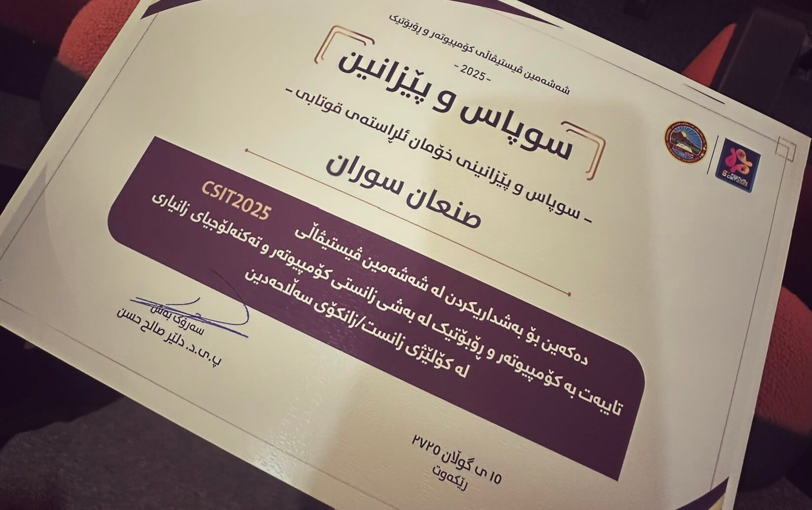
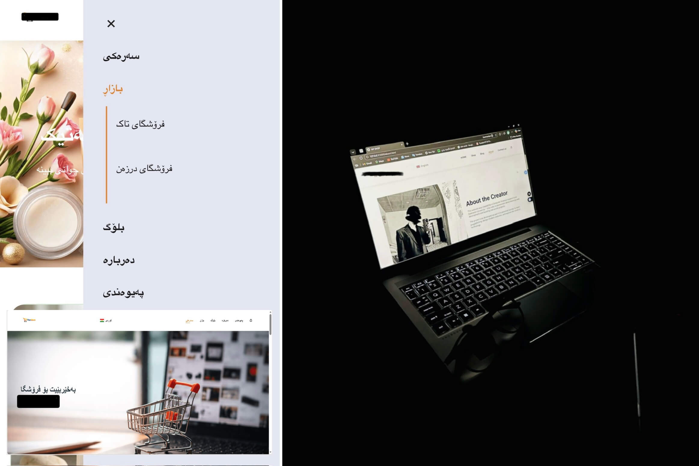

English
English
English
English
 کوردی
کوردی
 عربي
عربي
YOU IN MY WORLD NOW
Play music while exploring my world?
لە کاتی خوێندنەوەی ماڵپەڕەکە، دەتەوێت مۆسیقا لێ بدرێت؟
هل ترغب في تشغيل الموسيقى أثناء تصفح الموقع؟
English
English
کوردی
عربي
third -year student at Salahaddin University , studying Computer Science. I finished high school at Soran High School . I’m new to the world of computers , This website is where I share my journey, projects, and everything I’m building as I grow in the tech world
while I was in Grade 11, I built an "artificial hemodialysis" model as part of a " biology project " at " festival Bonakan Hall " Using simple materials like containers, tubing, and water flow systems, I created a working demonstration of how dialysis helps clean blood in patients with kidney failure. I presented this project during the event, explaining the process to visitors and helping them understand how the system works. It was one of the first projects that made me excited about combining science, creativity, and hands-on building — and it inspired me to continue exploring technology in the years that followed
During my final year of high school,Grade 12, I didn’t fully understand computers back then, but something about them pulled me in. I didn’t work on a project that year — my focus was getting a strong final score to reach university. Alhamdulillah, I didn’t get the mark I dreamed of, but I still reached my goal. I got accepted into the Computer Science Department, just like I planned. That year taught me that it’s not about having a perfect path, it’s about staying focused and never letting go of what you really want
I started my journey at Salahaddin University, studying Computer Science. That year, I experienced many new things. I attended a festival as a project watcher, where I observed the creative work of students from our department. I learned some things about computers through the students who built projects in robotics and websites. Watching their work taught me a lot and inspired me. Even though I wasn’t presenting, we all received a reward for participating,
In 2025, I built my first personal website and began learning web development, focusing on HTML, CSS, and JavaScript. Alongside my Computer Science studies, I explored digital marketing through Instagram, growing a page to over 13,000 followers and achieving more than 10 million views by learning how content and platform algorithms work. I also began learning how to use AI as a practical tool for different situations, including web development, content creation, and improving my personal projects.
In 2026, I expanded my practical experience by building a big responsive e-commerce website that supports three languages . I used this website and social media to start exploring online marketing, and sell things . Although the results were not as successful as I expected, the experience taught me about social media marketing, selling, and the challenges of building something from scratch. Also I rebuilt my personal website and continued developing my web development skills, while also becoming involved in a marketing team. In addition, I gained hands-on experience working alongside an engineer on the installation of solar power systems, helping with electrical panels and system setup. As I enter my third year of Computer Science at Salahaddin University, I continue to develop my skills across technology, business, marketing, and practical work.

My first biology project, I demonstrated how dialysis cleans blood for patients with kidney failure, presented at the Bonakan Hall Festival

I received my Grade 12 final score and was accepted into the Computer Science Department.

I Received a reward for helping organize and support a college project event, welcoming guests and assisting around the project displays.

A simple personal website I built as a beginner.

My biggest project so far, built to start a business through social media. The results were not what I expected, but it gave me real experience in building, selling, and marketing online.
I offer creative and modern video editing for all kinds of content — from short-form videos to professional ads . I use tools like Adobe Premiere Pro, CapCut, and AI editing software to create smooth, engaging videos, Whether you need a clean edit for your brand, a fast-paced short for social media, or an AI-enhanced clip.
Social media marketing based on real experience — creating content, using trends and hashtags, growing followers, and reaching more people. The goal is simple: get your product or business in front of more people and turn attention into potential customers. Results can vary, and not every post becomes a sale, but every campaign is an opportunity to learn, improve, and grow.
I have hands-on experience building responsive websites using **HTML, CSS, and JavaScript**, including an e-commerce website project. I can create and style complete web pages, make them responsive for different screen sizes, add animations and interactive features, and work with multilingual content. I also use AI tools as a development assistant to improve my code, solve problems, and achieve better results while continuing to understand the solutions I build. I also have a strong foundation in **C++**, with good knowledge of programming logic, problem-solving, functions, arrays, pointers, classes, and object-oriented programming. I’m continuing to improve my overall programming skills, .